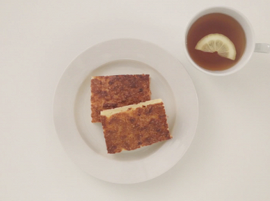

Рецепты

Ингредиенты:
Творог 200 г, сметана 2 столовые ложки, куриное яйцо 2 штуки, свочное масло 2 столовые ложки, пшеничная мука 1 стакан, сахар 1 стакан, соль по вкусу, сода ½ чайные ложки.
Рецепт:
1. Взять 200 грамм творога, добавить 2 яйца, 2 столовые ложки сметаны, 2 столовые ложки растопленного сливочного масла, стакан муки, стакан сахара, половину чайной ложки погашенной соды, щепотку соли.
2. Все перемешать, выложить в форму. Выпекать в духовке при температуре 180 градусов. Готово!

13 ноября, 2022 года.